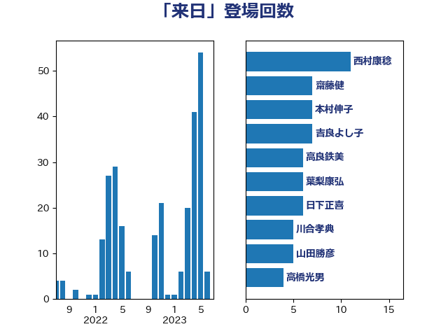

単語「来日」

| 上川陽子 | 自由民主党 | 13 回 |
| 渡辺周 | 立憲民主党 | 11 回 |
| 茂木敏充 | 自由民主党 | 10 回 |
| 斎藤嘉隆 | 立憲民主党 | 9 回 |
| 岸信夫 | 自由民主党 | 8 回 |
| 枝野幸男 | 立憲民主党 | 8 回 |
| 長妻昭 | 立憲民主党 | 8 回 |
| 丸川珠代 | 自由民主党 | 6 回 |
| 山添拓 | 日本共産党 | 6 回 |
| 橋本聖子 | 無所属 | 6 回 |
| 西村康稔 | 自由民主党 | 6 回 |
| 高良鉄美 | 無所属 | 6 回 |
| 川合孝典 | 国民民主党 | 5 回 |
| 松沢成文 | 日本維新の会 | 5 回 |
| 穀田恵二 | 日本共産党 | 5 回 |
| 中村裕之 | 自由民主党 | 4 回 |
| 塩川鉄也 | 日本共産党 | 4 回 |
| 日下正喜 | 公明党 | 4 回 |
| 笠浩史 | 無所属 | 4 回 |
| 菅義偉 | 自由民主党 | 4 回 |
| 丹羽秀樹 | 自由民主党 | 3 回 |
| 伊藤孝恵 | 国民民主党 | 3 回 |
| 徳永久志 | 立憲民主党 | 3 回 |
| 杉尾秀哉 | 立憲民主党 | 3 回 |
| 石川大我 | 立憲民主党 | 3 回 |
| 石川昭政 | 自由民主党 | 3 回 |
| 金城泰邦 | 公明党 | 3 回 |
| 高木かおり | 日本維新の会 | 3 回 |
| 上田清司 | 国民民主党 | 2 回 |
| 中谷一馬 | 立憲民主党 | 2 回 |
| 井上哲士 | 日本共産党 | 2 回 |
| 古屋範子 | 公明党 | 2 回 |
| 古川康 | 自由民主党 | 2 回 |
| 堀内詔子 | 自由民主党 | 2 回 |
| 塩田博昭 | 公明党 | 2 回 |
| 尾身朝子 | 自由民主党 | 2 回 |
| 山井和則 | 立憲民主党 | 2 回 |
| 岡本三成 | 公明党 | 2 回 |
| 横沢高徳 | 立憲民主党 | 2 回 |
| 田島麻衣子 | 立憲民主党 | 2 回 |
| 篠原豪 | 立憲民主党 | 2 回 |
| 蓮舫 | 立憲民主党 | 2 回 |
| 衛藤晟一 | 自由民主党 | 2 回 |
| 西岡秀子 | 国民民主党 | 2 回 |
| 谷田川元 | 立憲民主党 | 2 回 |
| 野間健 | 立憲民主党 | 2 回 |
| 高木啓 | 自由民主党 | 2 回 |
| 高橋光男 | 公明党 | 2 回 |
| 三宅伸吾 | 自由民主党 | 1 回 |
| 中川宏昌 | 公明党 | 1 回 |
| 中谷真一 | 自由民主党 | 1 回 |
| 井上信治 | 自由民主党 | 1 回 |
| 伊波洋一 | 無所属 | 1 回 |
| 伊藤孝江 | 公明党 | 1 回 |
| 加田裕之 | 自由民主党 | 1 回 |
| 古屋圭司 | 自由民主党 | 1 回 |
| 古賀之士 | 立憲民主党 | 1 回 |
| 土田慎 | 自由民主党 | 1 回 |
| 大塚耕平 | 国民民主党 | 1 回 |
| 大西健介 | 立憲民主党 | 1 回 |
| 安江伸夫 | 公明党 | 1 回 |
| 安達澄 | 無所属 | 1 回 |
| 寺田学 | 立憲民主党 | 1 回 |
| 小倉將信 | 自由民主党 | 1 回 |
| 小池晃 | 日本共産党 | 1 回 |
| 小泉進次郎 | 自由民主党 | 1 回 |
| 小熊慎司 | 立憲民主党 | 1 回 |
| 山崎誠 | 立憲民主党 | 1 回 |
| 平木大作 | 公明党 | 1 回 |
| 庄子賢一 | 公明党 | 1 回 |
| 打越さく良 | 立憲民主党 | 1 回 |
| 斉藤鉄夫 | 公明党 | 1 回 |
| 末松信介 | 自由民主党 | 1 回 |
| 林芳正 | 自由民主党 | 1 回 |
| 梅村みずほ | 日本維新の会 | 1 回 |
| 梅村聡 | 日本維新の会 | 1 回 |
| 武田良太 | 自由民主党 | 1 回 |
| 浜地雅一 | 公明党 | 1 回 |
| 渡辺猛之 | 自由民主党 | 1 回 |
| 牧山ひろえ | 立憲民主党 | 1 回 |
| 猪口邦子 | 自由民主党 | 1 回 |
| 石井正弘 | 自由民主党 | 1 回 |
| 石井章 | 日本維新の会 | 1 回 |
| 石川博崇 | 公明党 | 1 回 |
| 福島みずほ | 社会民主党 | 1 回 |
| 竹内真二 | 公明党 | 1 回 |
| 緑川貴士 | 立憲民主党 | 1 回 |
| 羽田次郎 | 立憲民主党 | 1 回 |
| 自見はなこ | 自由民主党 | 1 回 |
| 舞立昇治 | 自由民主党 | 1 回 |
| 舟山康江 | 国民民主党 | 1 回 |
| 萩生田光一 | 自由民主党 | 1 回 |
| 藤川政人 | 自由民主党 | 1 回 |
| 西銘恒三郎 | 自由民主党 | 1 回 |
| 豊田俊郎 | 自由民主党 | 1 回 |
| 赤羽一嘉 | 公明党 | 1 回 |
| 重徳和彦 | 立憲民主党 | 1 回 |
| 野田国義 | 立憲民主党 | 1 回 |
| 鈴木俊一 | 自由民主党 | 1 回 |
| 長浜博行 | 無所属 | 1 回 |
| 長谷川岳 | 自由民主党 | 1 回 |
| 阿部弘樹 | 日本維新の会 | 1 回 |
| 階猛 | 立憲民主党 | 1 回 |
| 青山大人 | 立憲民主党 | 1 回 |
| 青木愛 | 立憲民主党 | 1 回 |
| 麻生太郎 | 自由民主党 | 1 回 |